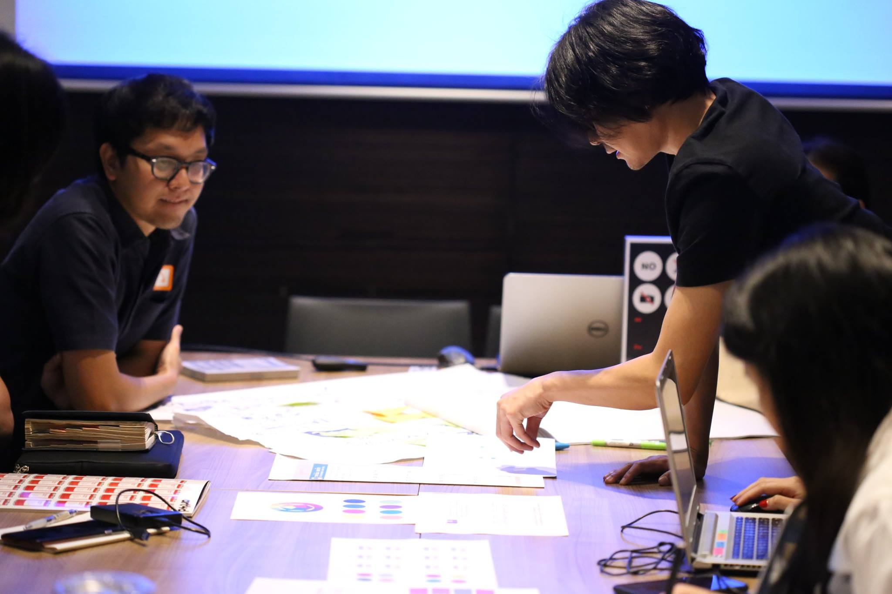
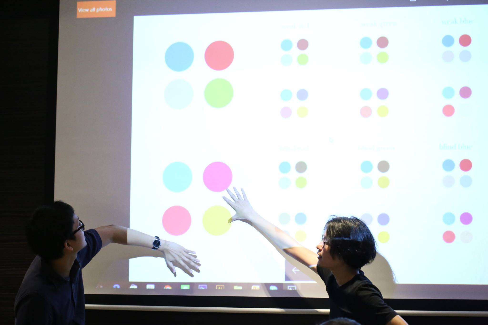
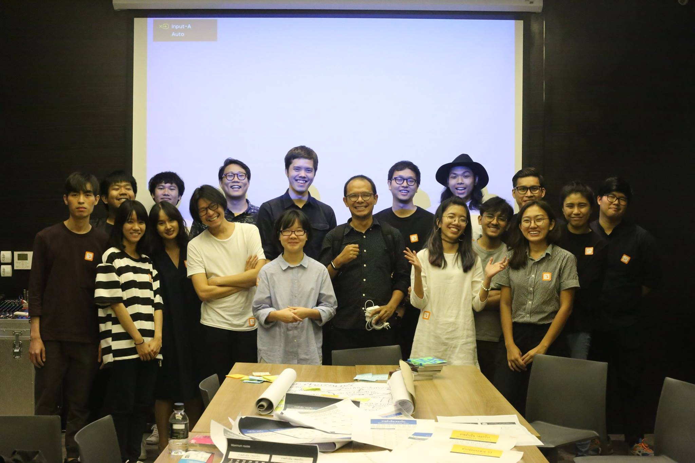
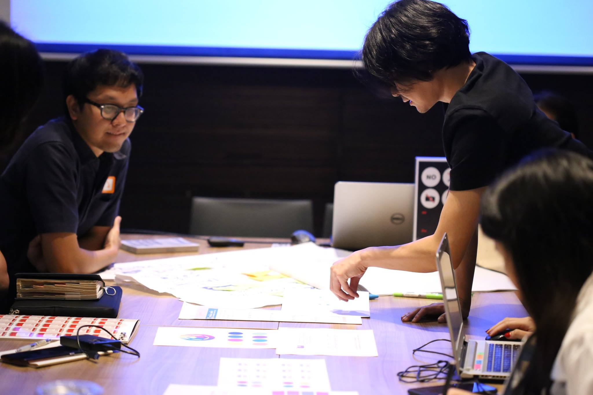
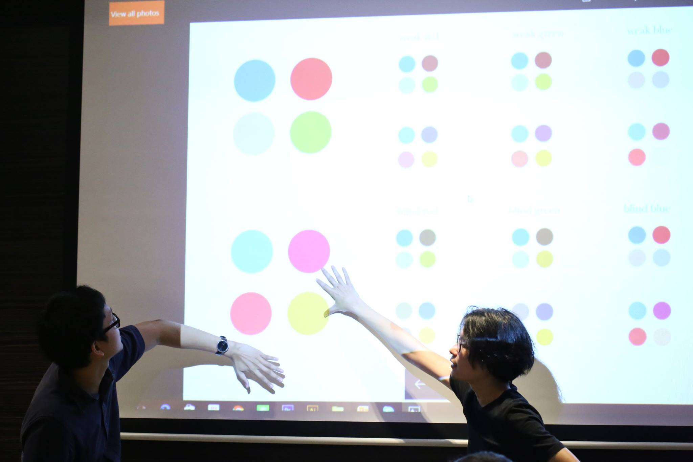
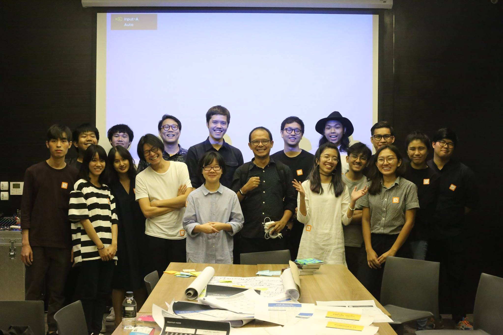

Bangkok Informative Bus Stop
UX/UI, Data-Driven Design, Inclusive Design
Role: Designer
With: MayDay, ThaiGa, Bangkok
The Bangkok informative bus stop project was a collaborative effort between Mayday, ThaiGa, TAB, TEDxBangkok, TCDC, and Boonmee Lab to improve the accessibility and convenience of public transportation for Thai and foreign visitors.
As a member of the design team, I contributed to the research and development of the project from idea to the final design. I conducted interviews and on-site observations to understand the challenges faced by users of public transportation in Bangkok. In weekly collaboration sessions, we shared our findings, pitched ideas, discussed problems and solutions, and created prototypes that we tested with users. The final design was a signage that fit into the bus stop poles, providing information on buses and other mass transportation options, such as the BTS, MRT, ARL, and express boats, in both Thai and English.
One of the key concerns was accessibility and practicality. We needed to fit a large amount of information into a limited space while ensuring that it was legible from a distance and that it communicated effectively with a diverse audience. To address this challenge, we used a modular layout for consistency and feasibility of maintenance and installation. Additionally, we carefully selected the names of bus stops to be intuitive and recognizable, using data from our research to guide our decisions. For typography, we chose a looped humanist font with legibility in mind. We also picked a color scheme that would be accessible to the color-blinded audience.
Working on this project allowed me to develop my skills in data-driven design and design for the public. It also sparked my interest in inclusive design and has inspired me to continue exploring this important field. Overall, I am proud to have contributed to a project that has the potential to improve the lives of many people in Bangkok.

 
